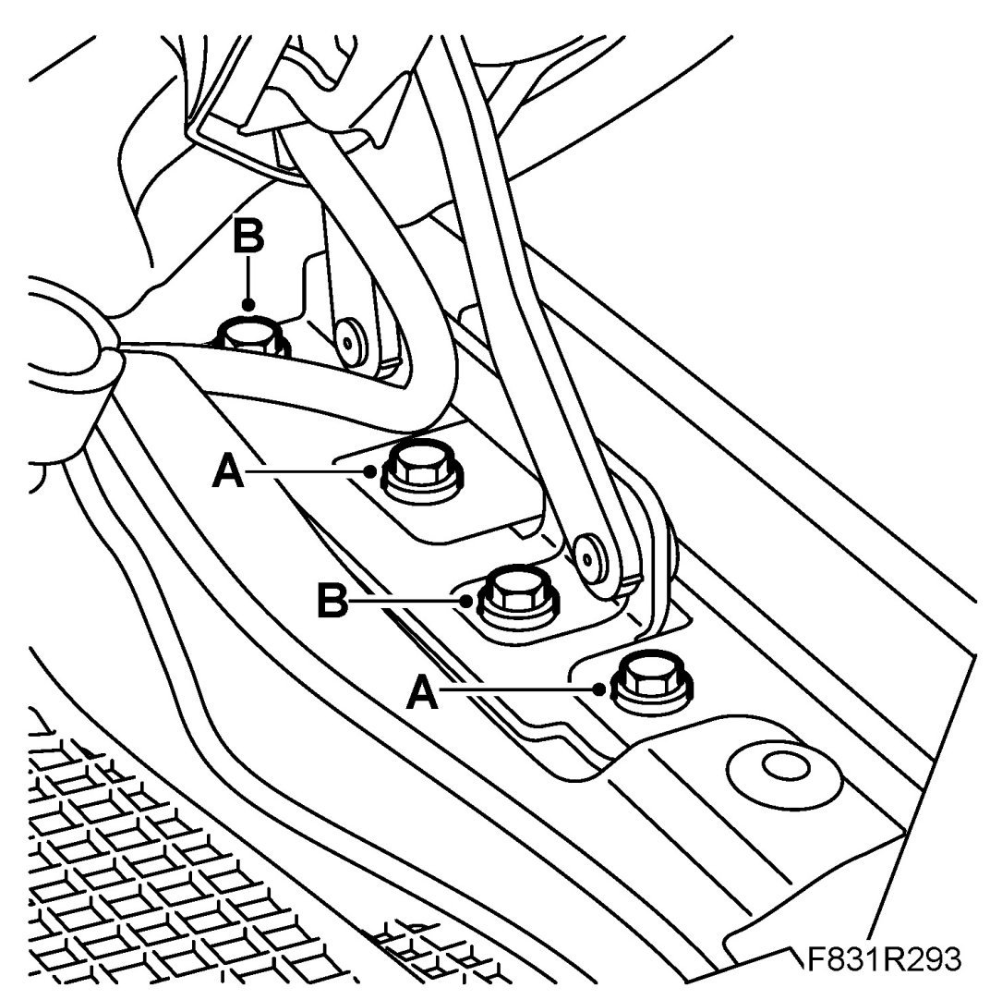

Hood: Adjustments
Bonnet, Adjustment
Forwards, backwards, sideways
1. Loosen the cover clips.
2. Loosen the front wing's bolts (A).

3. Loosen the hinge bolts (B).
4. Adjust the bonnet's hinges.
5. Tighten the hinge bolts (B).
Tightening torque up to and including M06 10 Nm (7 lbf ft)
Tightening torque from and including M07 8 Nm (6 lbf ft)
6. Tighten the front wing's bolts (A).
IMPORTANT: Take care not to damage the paint on the front wing.
7. Fit the cowl cover's clips
8. After adjusting the bonnet the bonnet lock may need to be adjusted. Loosen the bolts on the underside of the radiator member and adjust the bonnet lock.
9. Check the alignment of the bonnet and the function of the lock.
10. If necessary, touch-up the hinge's securing bolts.